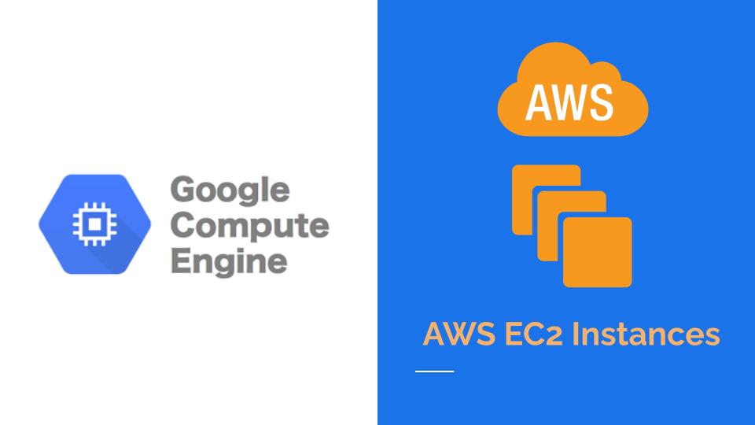

A Detailed Comparison of AWS EC2 and GCP Compute Engine - Part 1
2021-08-22 01:52:14

In this article, I will compare the features and issues offered by AWS and GCP for Virtual Machines. In this part, I will discuss machine creation and remoting features. From my experience, AWS has less productive instance management style then GCP. GCP provides ability to put SSH Public Key while creation and offers a way to retrieve passwords more efficiently when remoting. AWS keeps machines and keys separated in different regions that makes it complex to manage them.
Creation
AWS
After logging in, you have to go to the region where you want to create a machine. Then, after clicking "Launch instances", you will be prompted by 5-6 tabbed page to fill up a long form to select instance type, pieces of hardware, networking, security groups and so on. It is very customizable at the cost of lengthy form. I would suggest creating a script to do these tasks.
GCP
In GCP, it gives you a short form, and it contains the same thing necessary for 95% of the developers. The word choices are very easy to understand for entry level developers. For example, In GCP, there is a checkbox to allow or reject HTTP or HTTPS. In AWS, you have to block port 80 and 443 from the Networking section. Unlike AWS, an equivalent command to do the same things is also generated for you.
Note: I have found one thing very annoying in AWS. In AWS Console, I have to change region each time to see the instances running in that region. We were working with 12 regions. Suppose, we want to search a particular type of instance, and we don't know the region. We would need to check all the regions one by one. There is no way to see all the regions in same page. Switching region takes quite a long time. Later on, we have created our own AWS Console using the SDK's to handle this issue. In GCP, you can see all instances in the same page.
Remoting
In AWS
SSH Keypairs
You can attach an AWS SSH Keypair while creating the instance. There is no way to put your own SSH Public Key. The AWS SSH keypair is only downloadable when creating the keypair. It is kept nowhere in the AWS. You can easily connect to the Linux instances using it as an SSH Private Key. But there are several issues when it comes to Windows. A downloadable RDP file and information of host and username is given in the connect page. Managing the RDP files are harder if there are good number of instances. Then comes another issue, maintaining the AWS keypairs. AWS keypair resources are region-specific resource. It means you cannot use us-east-1s AWS Keypair in any other region. So, you end up creating keypairs in all regions. Now, depending on the access level of different engineers you create more keypairs. These keypairs are retrievable if lost. So, managing this number of keypairs becomes a pain in the neck.
Login credentials retrieval
To login using RDP, you will need to paste the content of the private key or upload the private key file associated with the instance. This process takes time. Besides, to get the option to paste or upload the key, you will need to wait for 4 minutes at least to get the Windows up. The username is always Administrator. You may create new user after logging into the machine[NOT TESTED]
In GCP
SSH Keypairs
You can upload SSH public keys during creating machines. So, no hassle to manage SSH Keypairs. I would recommend you to make an image with the key and then always create machines from that image. Besides, you can use Google Cloud Shell to make quick changes or views.
Login credentials
You can set Windows username from the console without logging into the computer a password will be generated immediately.
From years of experience in cloud computing, I think these parts could be a great improvement for AWS. In next article, I will give a detail comparison of networking features offered by AWS and GCP.